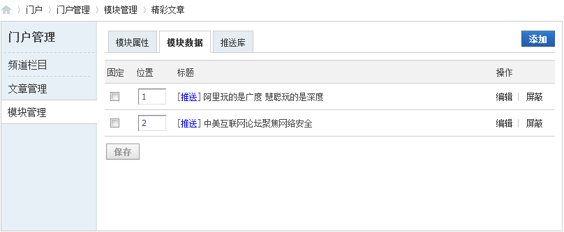
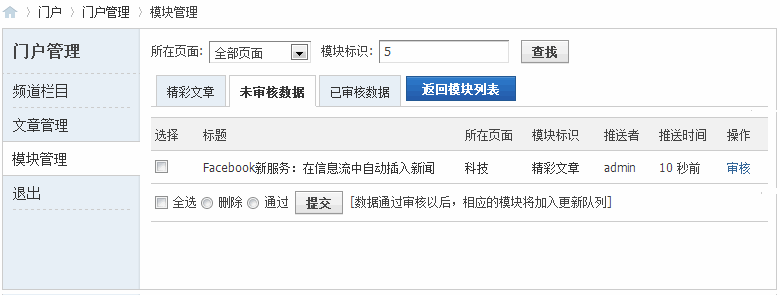

门户管理
系统为站长在前台开辟了门户管理平台，无需登陆后台操作，即可管理门户。门户管理平台类似一个小型的 CMS 管理后台，完成文章的发布、管理，并且自动更新缓存。其中“模块管理”功能，可以对各个模块属性、数据进行定义，审核和查找推送的文章和图片，将用户个人发表的热点信息展示在各个模块中。
在门户管理平台的频道栏目下，列出了门户下的所有频道，包括频道名称、频道下的文章数、频道可进行操作。管理者可以在该页面发布文章和进行文章的管理操作。
在文章管理页面，默认列出所有的文章，也可以利用页面顶部的搜索功能搜索需要的文章。
在文章的列表区域，展示文章的标题、分类、作者、文章可进行的操作。
管理者可以批量管理文章，管理的操作有放入回收站、文章删除、文章移动。若将文章放入回收站，在后台 => 门户 => 文章管理 => 回收站中可以看到该文章。若恢复文章，文章即可在前台可见。
对应单条文章记录，管理者可以对文章进行编辑、删除和模块推送操作。
在模块管理页面，管理者可以利用上面的搜索功能，搜索需要的模块。
在模块列表区域，有三部分数据，分别为模块列表、未审核数据列表、已审核数据列表。
模块列表页面展示了模块的标识、模块分类、数据来源、所在页面和可进行操作。
模块可进行的操作有设置模块属性、调整模块数据、审核模块数据和管理推送库：
模块属性：点击属性，可查看或修改模块的属性
模块数据：可以对模块的数据进行固定数据、调整显示顺序、编辑显示数据、屏蔽数据显示
推送库：在推送库界面，显示推送来的数据
审核：在审核界面，列出待审核的模块数据列表，管理者可以在该页面对模块的数据进行审核操作
加入更新队列：将有属性、数据等有更新的模块加入到更新队列，加入后模块并不立即更新，当此模块所在页面被访问时才会触发更新。